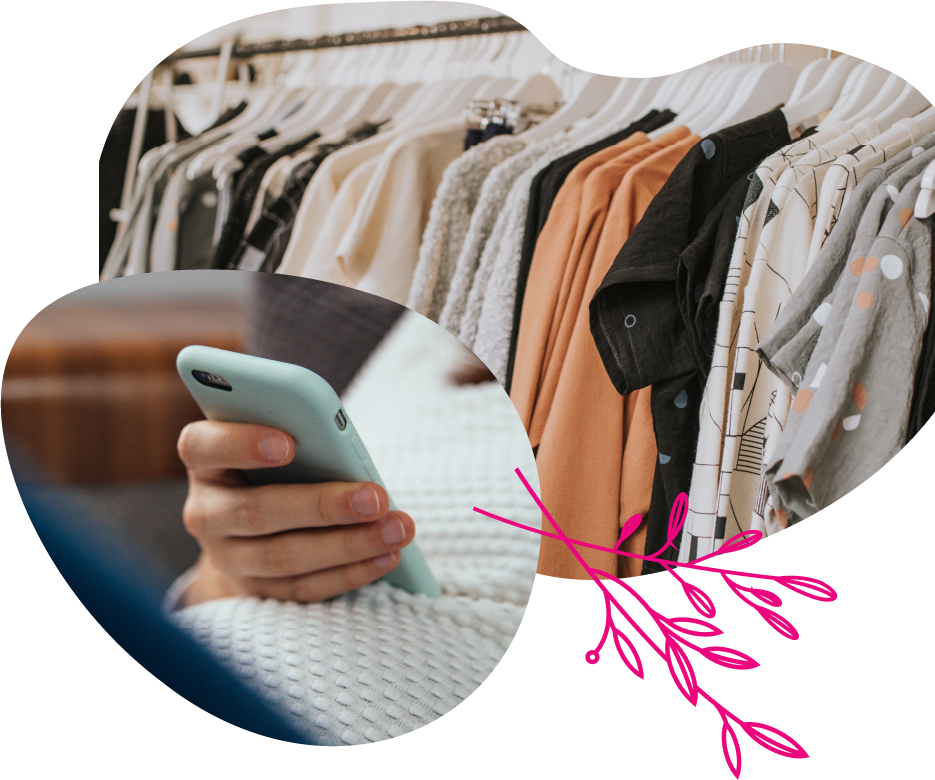
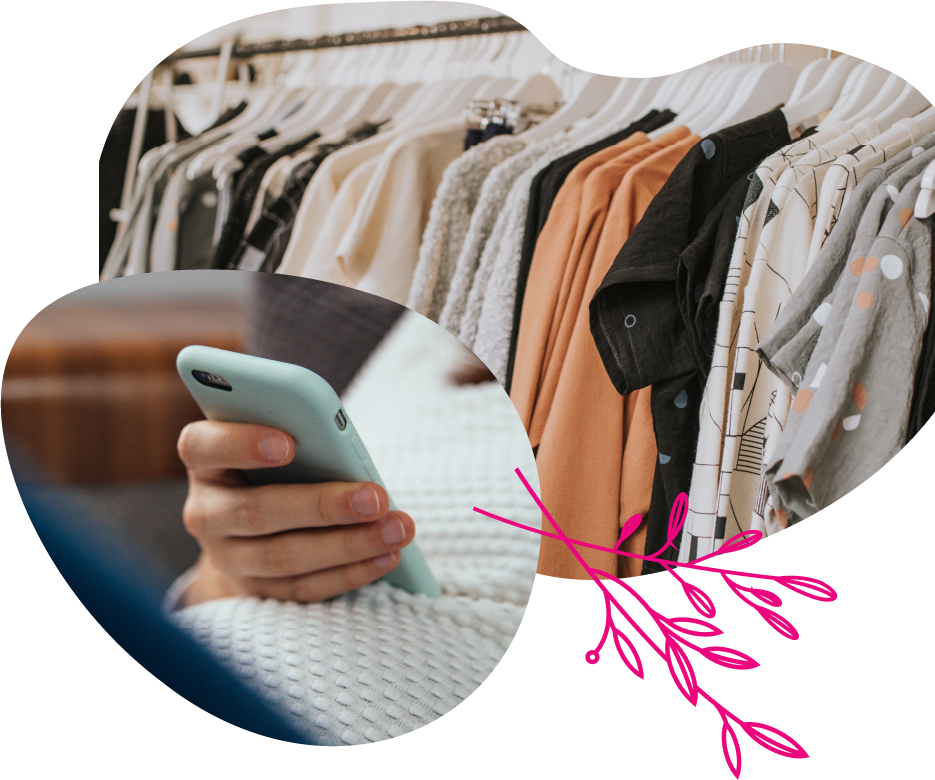

Бумажный купальник и туфли из хрусталя: учимся не совершать нелепых покупок
 

Пишите
списки
Перед походом в магазин проведите ревизию гардероба и составьте подробный список того, что вам необходимо. Стойте! Вычеркните ровно половину. Теперь можно идти.
Ведите расчётную книгу
Раньше тетрадка домашних расходов была настольной книгой любой хозяйки. В наши дни вести домашнюю бухгалтерию не очень принято, а жаль. Записывая свои расходы после шопинга (разовые, за неделю или сразу за месяц) вы сможете наглядно увидеть, укладываетесь ли вы в бюджет. Спойлер: скорее всего – нет.
Помните,
что распродажа распродаже – рознь.
Существуют две распродажи в году, на которые точно стоит обращать внимание, особенно, если речь идёт о крупных сетевых магазинах. Это августовские и январские - послепраздничные сейлы. Всё остальное – предновогодние, весенние, осенние распродажи – лишь коммерческие уловки, заставляющие покупателей приобретать зачастую ненужные им вещи с несерьёзными скидками в 10-15%. Да и они, кстати, распространяются подчас далеко не на всю коллекцию.
Учитесь отличать брендированные вещи от подделки
Фейк в наши дни не в моде. Особенно, когда речь идёт об аксессуарах. Француженка, например, никогда не купит поддельную сумку Gucci, если ей это не по карману. Вместо этого она дополнит коктейльное платье соломенной сумкой с воскресного рынка, сплетённой вручную из натурального материала, но при этом совершенно дешевой. И будет выглядеть невероятно стильно. Даже если для вас не так важно покупать настоящее, знание что есть фейк, а что подделка всё равно пригодится. Прежде всего - чтобы обезопасить себя от обмана, когда под видом оригинального бренда вам попытаются продать дешёвую копию.
Покупайте вещи первой необходимости
Что это за вещи? Инес де ля Фрессанж в своей книжке «Парижанка и её стиль» включает в свой список балетки (летом) и высокие каблуки без каблука (зимой). Ещё - V-образный пуловер из кашемира, джинсы и маленькое чёрное платье. Это то, что принято называть «базовый гардероб».
Комбинируйте дорогие и дешевые вещи
Этому мастерству, кстати, тоже стоит поучиться у парижанок. Они как никто умеют с ног до головы одеться в недорогом сетевом магазине, но за счёт одного дорогого предмета – например, шарфа или сумки, сделать образ люксовым.

Выбирайте натуральные и приятные в носке материалы
Одежда – это продолжение нас, наша вторая кожа, в которой мы проводим большую часть суток. Поэтому находиться в ней должно быть, во-первых, безопасно для здоровья, а во-вторых, приятно. Красивое нижнее бельё, выполненное из низкокачественной синтетики, не принесёт удовольствия никому, особенно, если спровоцирует развитие хронических заболеваний, например, молочницы. А туфли из хрусталя, как бы эффектно они ни выглядели, сотрут ноги в кровь. Кстати, в оригинальной версии «Золушки», написанной на старофранцузском, туфли были вовсе не хрустальные, а кожаные – с меховой отделкой.
Помните
о «правиле
того же вечера»
Этим правилом французы определяют критерий удачной покупки. Смысл в следующем: если вы купили что-то, и вам хочется надеть это в тот же вечер, значит, вы сделали правильный выбор.